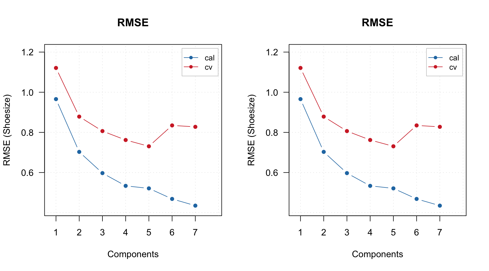

Validation
Validation of PLS (and PLS-DA) models can be done either using a test set or by cross-validation. In case of test set, similar to calibration, you need to provide it as two separate matrices — one for predictors (parameter x.test) and one for response (y.test) values. The rest will be done automatically and you will see the results for test set in all plots and summary tables.
Alternatively you can use cross-validation to optimize the parameters of your model (number of components, preprocessing, variable selection) and then apply the final optimized model to the test set. In this case you need to set cross-validation parameter cv as described below.
You probably have noticed a small warning we got when created the first PLS model in this chapter:
m = pls(Xc, yc, 7, scale = TRUE, info = "Shoesize prediction model")## Warning in selectCompNum.pls(model, selcrit = ncomp.selcrit): No validation results were found.When you create a model, it tries to select optimal number of components automatically (which, of course, you can always change later). To do that, the method uses RMSE values, calculated for different number of components and cross-validation predictions. So, if we do not use cross-validation, it warns us about this.
There are two different ways/criteria for automatic selection. One is using first local minimum on the RMSE plot and second is so called Wold criterion, based on a ratio between PRESS values for current and next component. You can select which criterion to use by specifying parameter ncomp.selcrit (either 'min' or 'wold') as it is shown below.
m1 = pls(Xc, yc, 7, scale = TRUE, cv = 1, ncomp.selcrit = "min")
show(m1$ncomp.selected)## [1] 5m2 = pls(Xc, yc, 7, scale = TRUE, cv = 1, ncomp.selcrit = "wold")
show(m2$ncomp.selected)## [1] 5Well, in this case both pointed on the same number, 5, but sometimes they give different solutions.
And here are the RMSE plots (they are identical of course), where you can see how error depends on number of components for both calibration set and cross-validated predictions. Apparently the minimum for cross-validation error (RMSECV) is indeed at 5:
par(mfrow = c(1, 2))
plotRMSE(m1)
plotRMSE(m2)
Another useful plot in this case is a plot which shows ratio between cross-validated RMSE values, RMSECV, and the calibrated ones, RMSEC. You can see an example in the figure below and read more about this plot in blog post by Barry M. Wise.
par(mfrow = c(1, 2))
plotRMSERatio(m1)
plotRMSERatio(m2, pch = 1, col = "red")In the previous examples we set arameter cv to a number 1. But in fact it can be a number, a list or a vector with segment values manually assigned for each measurement.
If it is a number, it will be used as number of segments for random cross-validation, e.g. if cv = 2 cross-validation with two segments will be carried out with measurements being randomly split into the segments. For full cross-validation use cv = 1 like in the example above. This option is a bit confusing, logically we have to set cv equal to number of measurements in the calibration set, but it is kept for backward compatibility.
For more advanced selection you can provide a list with name of cross-validation method, number of segments and number of iterations, e.g. cv = list("rand", 4, 4) for running random cross-validation with four segments and four repetitions or cv = list("ven", 8) for systematic split into eight segments (venetian blinds). In case of venetian splits, the measurements will be automatically ordered from smallest to largest response (y) values.
Finally, from version 0.13.0, you can also provide a vector with manual slits. For example, if you create a model with the following value for cv parameter: cv = rep(1:4, length.out = nrow(Xc)) the vector of values you provide will look as 1 2 3 4 1 2 3 4 1 2 ..., which corresponds to systematic splits but without ordering y-values, so it will use the current order of measurements (rows) in the data. Use this option if you have specific requirements for cross-validation and the implemented methods do not meet them.
Method summary() for validated model shows performance statistics calculated using optimal number of components for each of the results (calibration, cross-validation, test set — if the last two are used of course).
summary(m1)##
## PLS model (class pls) summary
## -------------------------------
## Info:
## Number of selected components: 5
## Cross-validation: full (leave one out)
##
## Response variable: Shoesize
## X cumexpvar Y cumexpvar R2 RMSE Slope Bias RPD
## Cal 97.63961 98.18916 0.982 0.521 0.982 0.0000 7.59
## Cv NA NA 0.964 0.731 0.982 0.0064 5.41As you can see, there are no values for cumulative explained variance for cross-validation result, because in case of cross-validation it is not possible to compute the variance correctly. But the other figures of merit are shown.
If you want more details run summary() for one of the result objects.
summary(m1$res$cal)##
## PLS regression results (class plsres) summary
## Info: calibration results
## Number of selected components: 5
##
## Response variable Shoesize:
## X expvar X cumexpvar Y expvar Y cumexpvar R2 RMSE Slope Bias RPD
## Comp 1 50.505 50.505 93.779 93.779 0.938 0.966 0.938 0 4.10
## Comp 2 20.979 71.484 2.926 96.705 0.967 0.703 0.967 0 5.63
## Comp 3 8.667 80.151 0.917 97.622 0.976 0.597 0.976 0 6.62
## Comp 4 5.847 85.998 0.479 98.101 0.981 0.534 0.981 0 7.41
## Comp 5 11.642 97.640 0.088 98.189 0.982 0.521 0.982 0 7.59
## Comp 6 0.495 98.135 0.347 98.536 0.985 0.468 0.985 0 8.44
## Comp 7 0.442 98.577 0.202 98.738 0.987 0.435 0.987 0 9.09In this case, the statistics are shown for all available components and explained variance for individual components is added.